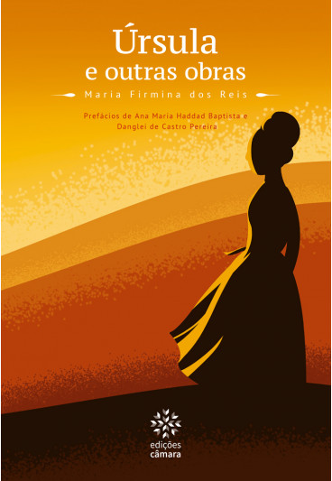
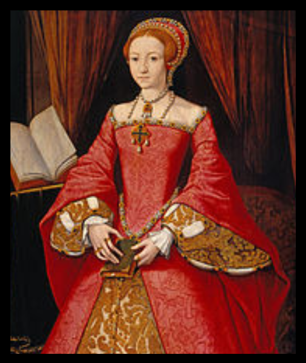
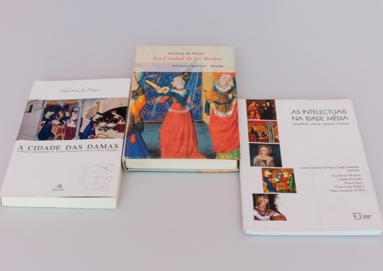
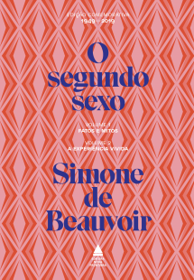

galeria de fotos
Maria Firmina dos Reisfoi a primeira mulher a publicar um romance no Brasil.Úrsula
Úrsula primeiro livro de romance publicado por uma mulher no Brasil

Christine de Pizan a primeira mulher publicar um livro no Ocidente profissionalmente
Cidade das Damas,lançado em 1405, foi um marco na história da literatura. Ao lançar a obra, a italiana Christine de Pizan se tornou a primeira mulher publicar um livro no Ocidente profissionalmente

simone de beauvoir Feminista, símbolo do existencialismo, Simone revolucionou a literatura ao analisar a presença e o papel da mulher na sociedade. A autora de“O segundo sexo” foi polêmica para os padrões da época por produzir conteúdos altamente libertários e eróticos.
“O segundo sexo” livro polêmica para os padrões da época por produzir conteúdos altamente libertários e eróticos.